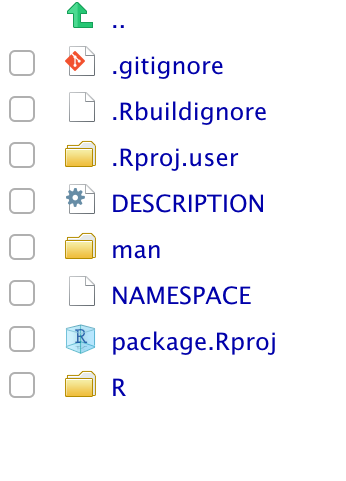

3 Building a R package
3.1 Motivation
This chapter will show you how to create a R package with varrying number of additions. From a simple minimal package for personal use to a fully-fleshed package.
Creating a R package is not only done for publication. It also helps you stay organizes, save yourself time while still letting you share your code with other people. Learning what goes into creating a package can be a mouthful at first but the conventions and rules revolving around packages makes the creation easy.
3.2 Preperation
To get started it would be preferriable for you to have git installed on your machine and have a Github account. https://happygitwithr.com/ provides a brilliant and thorough walkthrough of using git/Github with R.
In addition to git, you will also need the following packages
install.packages(c("devtools", "roxygen2", "testthat", "knitr"))If you are planning on using compiled code you will need to install the following depending on your operating system:
On Windows, download and install Rtools.
On Mac, download and install XCode (available for free in the App Store) or the Command Line Tools for Xcode.
On Linux, download and install the R development tools.
3.2.1 Naming your R package
When creating a package you need to give it at name. The name
- can only consist of letters, numbers and periods
- must start with a letter, and
- cannot end with a period
Furthermore we recommend that you don’t use periods and stick with letters as much as possible. You need a unique name, mainly because of the fact that if you plan on getting your package on CRAN or bioconductor you can’t overlap with any of their names. A easy check for can be done using the available package. available also checks across acronyms, slang and other meanings that you might have missed. Secondly try to pick a name that is googleable.
3.2.2 Checking
How that you are a R developer you will benifit from using the essential tool R CMD check. R CMD check check your package for common problems and reports them back to you. Using this early and often stops you from having to deal with ingrown problems. You can run R CMD check by typing the code devtools::check() or with the shortcut Ctrl/Cmd + Shift + E in RStudio. A common workflow is
- Run
R CMD check - If there is a problem fix one of them
- Repeat until you don’t have any errors
More information about individuel checks can be found here.
Further reading:
3.3 Minimal R Package
Creating a package can easily be done using the usethis package, all you need is to provide a path to the directory you want the pacakge to be created in.
create_package("~/path/to/packagename")If you are using Rstudio you should already be transported to a project at the specified location with the following content

For now we will focus on the /R folder and the DESCRIPTION files as the remaining files/folders should be automatically modified if we use usethis.
The DESCRIPTION is our first stop. You should make yourself the author,
Authors@R:
person("given name", "family name", role = c("aut", "cre"), "contact@mail.com")The roles aut and cre stand for author and creator respectively. For persons with an ORCID identifier (see https://orcid.org/, you can provide the identifier as part of the comment argument of person()
person(""given name", "family name", comment = c(ORCID = "0000-1111-2222-3333"))More details regarding use of roles can be found here.
Next you need to fill in the Title and Description fields. The Title should be a short and simple description of the package. Must be plain text, title-case (This Sentence Is Title Case), not end in a period and should preferable be les then 65 characters. The Description fields is the more detailed version of the Title field. It should span multiple lines, each indented 4 spaces (first excluded) and being less then 80 characters long. This is a fairly limited space so further details should be included in the readme.
The package created here doesn’t provide anything in terms of functions or data. Adding these objects will be the subject of the next section.
3.4 Additional Components
This section will introduce various components you can include in your package to improve its functionality and useability.
3.4.1 R code R/
The meat of a package will generally come from the functions it provides (expections are data packages which just contain data, the gapminder is a notable example of this). All your functions should be includes inside the R/ folder in .R scripts. While there are no hard rules regarding the organization of functions, it is generally advised to devide the functions amoung multiple .R scripts for better organization. Likewise will naming the scripts not improve the runtime and efficiency of your code but will make it easier to navigate.
A .R script can be created manually and saved in the R/ folder, or you can use the use_r() function from usethis. Suppose we are adding a function to cluster some data accourding to the k-means clustering, an appropiate name of the .R script could be kmeans.
use_r("kmeans")This will create a file called kmeans.R in the R/ folder. To make the functions useable you must export them, this will be covers in the next subsection Documentation.
Further reading:
3.4.2 Documentation
Documentation is perhaps the single most important part of a package, without it, new users would not be able to use your otherwise excellent package. the documentation in a r package is stored in the man/ folder, but you should never modify these files by hand. You should use roxygen2 to document your code in the .R scripts. roxygen2 comments looks like this
#' Adds 1 to a number.
#'
#' This function is vectorized so it allows vectors of any length as input.
#'
#' @param x A number.
#' @return 1 plus the value of \code{x}.
#' @export
#' @examples
#' addone(pi)
#' addone(1:10)
addone <- function(x) {
x + 1
}Notice how each like line begins with #' this is the indication that is is a roxygen2 comment to be used for documentation. A basic function documentation comes with 6 parts:
- The “title” is first line of a roxygen2 comment block. This becomes the headline. This should be kept brief and concise.
- The following paragraphs is the description and details. The first paragraph will become the descripton (to appear right after the title) and the remaining paragraphs will become details to appear latter on the documentation page.
- Argument documentation. There should be a
@paramtag for each argument in the function noting the name of the argument and its use. - The expected outcome. The
@returnshould be followed by a brief explination of the type of output the function will provide. - Declaration of exportation. If you want the function to be used by the user you must include the
@exporttag in the roxygen2 comments. - Exampes. Write various examples following the
@examplestag. these examples should be fairly small and run fast.
for information on proper use and additional tags please refer to the links in further reading. To quickly provide a roxygen2 skeleton do Code > Insert roxygen skeleton in Rstudio while having the function selected.
once you have written the documentation as roxygen2 comments you need to turn it into .Rd files which should be located in the man/ folder. This is done by running roxygen.
There are three main ways to run roxygen:
roxygen2::roxygenise(), or
devtools::document(), if you’re using devtools, or
Ctrl/Cmd + Shift + D, if you’re using RStudio.
Further reading:
3.4.3 Dependencies
One of the jobs of the DESCRIPTION file is to denote that other packages are needed for your package to run. Generally you will only need to use 3 of the tags. Imports, Suggests and LinkingTo.
- Imports are packages that your package to work.
- Suggests are packages that your package can use but doesn’t need.
- LinkingTo packages listed here rely on C or C++ code in another package.
Both Imports and Suggests fields can be changed using the usethis function use_package()
# Sets dplyr as 'Imports'
use_package("dplyr", type = "Imports")
# Sets dplyr as 'Suggests'
use_package("dplyr", type = "Suggests")Once this have been done you should refer to the functions with the :: operator in the style package::function. As an example, lets say we want to calculate the procentage of a data.frame is composed of distinct rows. Here it can be advantageous to leverage the distinct() function from the dplyr package. We will start by calling use_package("dplyr", type = "Imports") to make sure that dplyr is specified in the DESCRIPTION file, next we can use the distinct() function by prefixing it with dplyr::.
distinct_procentage <- function(df) {
df_distinct <- dplyr::distinct(df)
full_n <- nrow(df)
distinct_n <- nrow(df_distinct)
distinct_n / full_n
}The LinkingTo field will automatically filled when you are to use C or C++, this will be covered in the section on Compiled code.
Further reading:
3.4.4 License
The License field in the DESCRIPTION file is telling you what kind of license applies to the code in the package. We will not cover the difference between the different licenses in the book and will refer readers to https://r-pkgs.org/description.html#license as a starting point and the further reading section for further reading. In general you will end with one of the 3 lincenses MIT, GPL-3 or CC0. Once you have decided on your license you simple use the corresponding usethis function to handle the rest.
use_mit_license("My Name")
use_gpl3_license("My Name")
use_cc0_license("Ny Name")Further reading:
3.4.5 README
3.4.6 Tests
3.4.7 Continious integration
3.4.8 Data
3.4.9 Compiled code
3.4.10 News
3.4.11 vignettes
3.5 Resources
Usethis package
https://usethis.r-lib.org/
Cran documentation
https://cran.r-project.org/doc/manuals/R-exts.html
R Packages
https://r-pkgs.org/
https://www.hvitfeldt.me/blog/usethis-workflow-for-package-development/
You can make a package in 20 minutes - Rstudio Conf Talk by Jim Hester
https://www.rstudio.com/resources/videos/you-can-make-a-package-in-20-minutes/
https://hilaryparker.com/2014/04/29/writing-an-r-package-from-scratch/
https://cran.r-project.org/doc/manuals/r-release/R-exts.html
https://ropensci.github.io/dev_guide/
https://ropensci.org/blog/2018/03/16/thanking-reviewers-in-metadata/